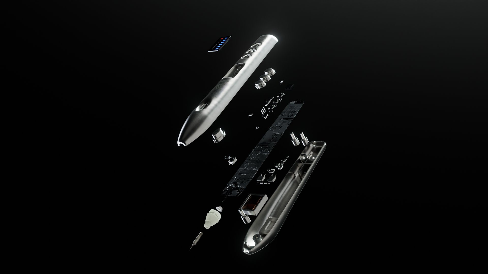

◆ Blog
Ghi chép từ
bàn làm việc
Những thứ tôi rút ra khi làm job thật và khi sửa bài cho học viên. Không có bài nào ở đây là lý thuyết chép lại — nếu tôi chưa từng vấp phải nó, tôi không viết.
Lộ trình tự học Blender: 7 kỹ năng, và thứ tự bạn không nên đảo
Phần lớn người mới bỏ Blender không phải vì khó, mà vì học sai thứ tự. Đây là trình tự 7 kỹ năng và lý do từng bước phải đứng ở vị trí đó.

5 lỗi lighting khiến render của bạn trông rẻ tiền
Không phải do máy yếu hay thiếu plugin. Năm lỗi ánh sáng dưới đây gặp ở gần như mọi bài tự học, và cái nào cũng sửa được trong một buổi.

Từ file Blender đến TVC: quy trình một shot sản phẩm chạy thật
Toàn bộ các bước một shot sản phẩm đi qua trong dự án thương mại — kể cả những khâu không ai quay video hướng dẫn: brief, duyệt, và sửa theo ý khách.

Blender Studio mở kho hậu trường OVERGROWN: file production thật, học được gì từ đó
Blender Studio mở miễn phí nhật ký sản xuất phim OVERGROWN — rigging, lông, shading, ánh sáng, nước, compositing. Đây là cách khai thác nó cho ra kỹ năng thật.

Add-on hard-surface cho Blender: cái nào đáng cài, cái nào bỏ qua
Danh sách add-on hard-surface mà artist tại CD Projekt Red dùng, và đánh giá thẳng thắn cái nào thật sự cần khi bạn làm sản phẩm thương mại.
Sáu node và một hành lang: bài học dựng không khí từ Backrooms của Blender Guru
Andrew Price dựng cảnh Backrooms gần như không model, không UV — chỉ sáu node. Phân tích vì sao cách làm này hiệu quả và khi nào nên áp dụng.